Keepit user guide
Keepit is a clipboard history and template manager for macOS. It lives in the menu bar, remembers everything you copy, and pastes any of it back with a hot key. All shortcuts below are the defaults; each can be changed in Settings → Shortcuts.
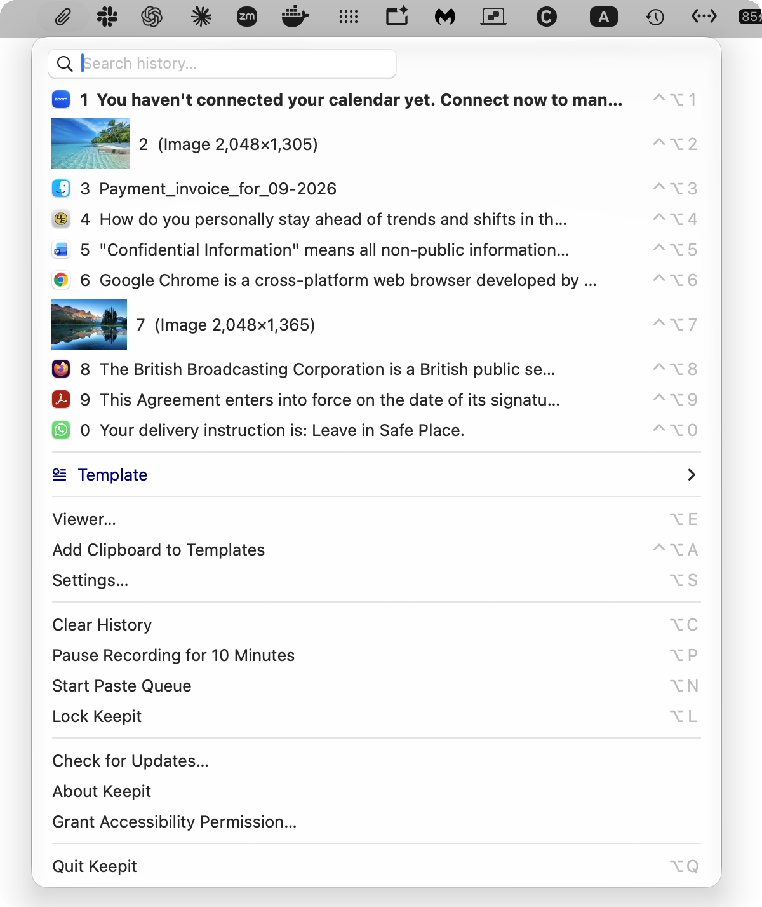
Part 1 — Getting started
Install
Homebrew — recommended, because brew upgrade keeps it current:
brew tap andrey-insarov/keepit https://github.com/andrey-insarov/Keepit
brew install --cask andrey-insarov/keepit/keepit
DMG — download Keepit-<version>.dmg from the
latest release, open it and drag Keepit
into Applications.
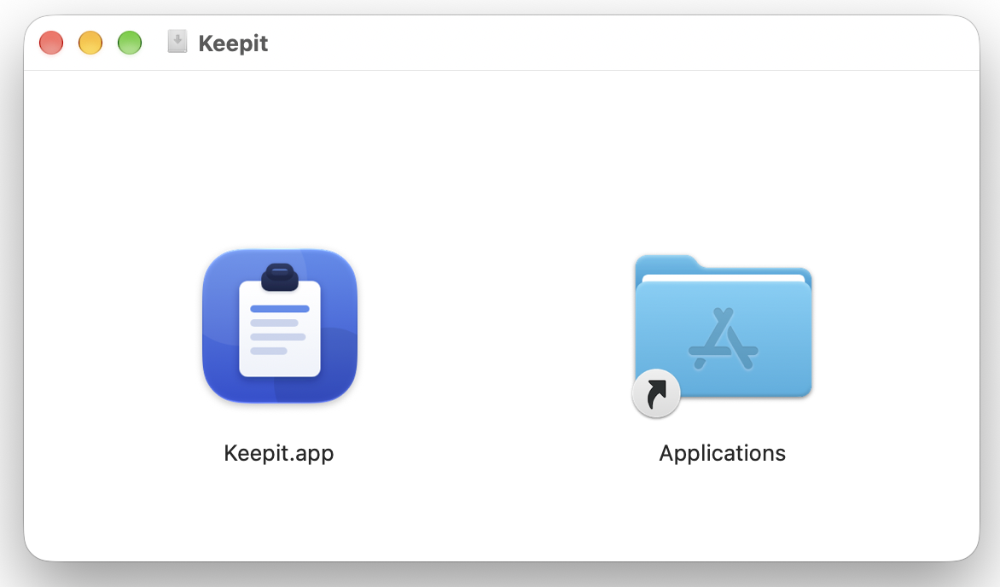
The first time you open the app, macOS confirms that it came from the Internet and was checked by Apple. Click Open.
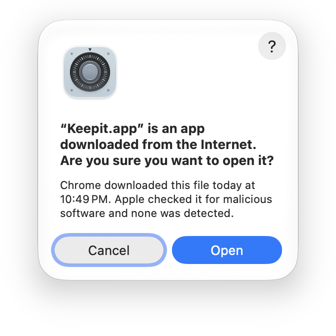
Keepit is signed and notarized, updates itself, and runs natively on Apple silicon and Intel Macs with macOS 13 Ventura or newer.
First launch
Keepit is a menu-bar app: no Dock icon, no window until you open one. After the first launch the 📎 icon appears in the menu bar, and Keepit asks two things.
1. The Accessibility permission. To paste for you, Keepit sends ⌘V to the app you were working in; macOS allows that only for apps listed under System Settings → Privacy & Security → Accessibility. Click Open System Settings and switch Keepit on. Without it Keepit still records and copies, but you press ⌘V yourself.
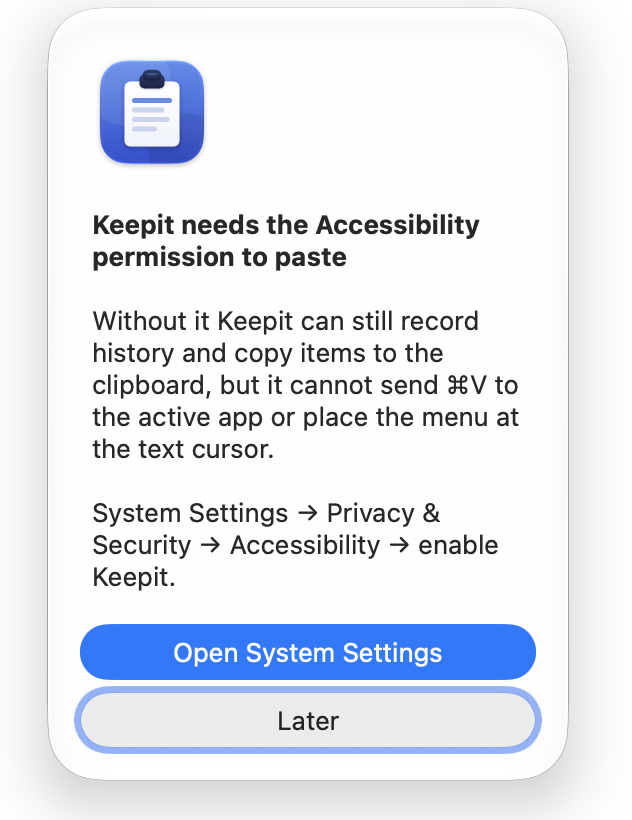
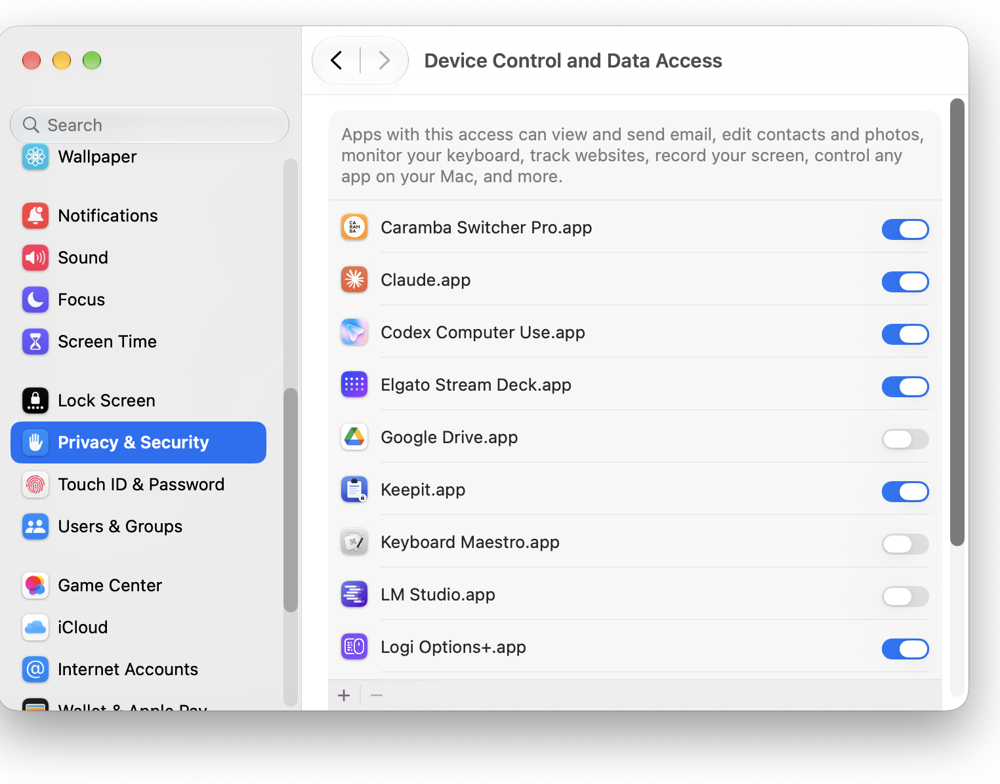
2. A password (optional). Keepit can store the history and templates encrypted and unlock with Touch ID. You can decide now or later in Settings → Security; Part 6 explains how it works. Not Now keeps everything unencrypted on disk.
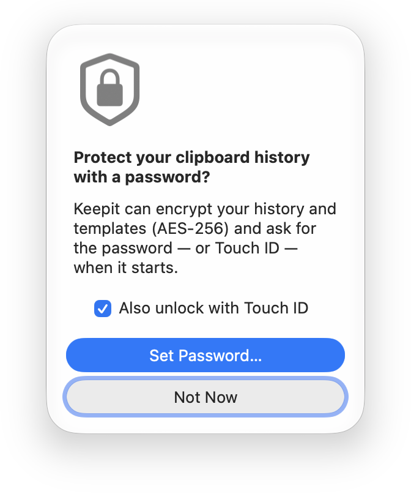
Keepit starts at login by default — Settings → General switches that off.
Part 2 — Everyday use
The history menu
Press ⌥M in any app, or click the 📎 icon. The menu opens at your text cursor when Keepit can find it, otherwise at the mouse pointer.
Each line is one clip, newest first. The newest one is bold — it is what is on the clipboard
right now. The icon shows the app you copied from; a title ending in … has more lines than the
menu shows. Images show a thumbnail, file lists show the file names.
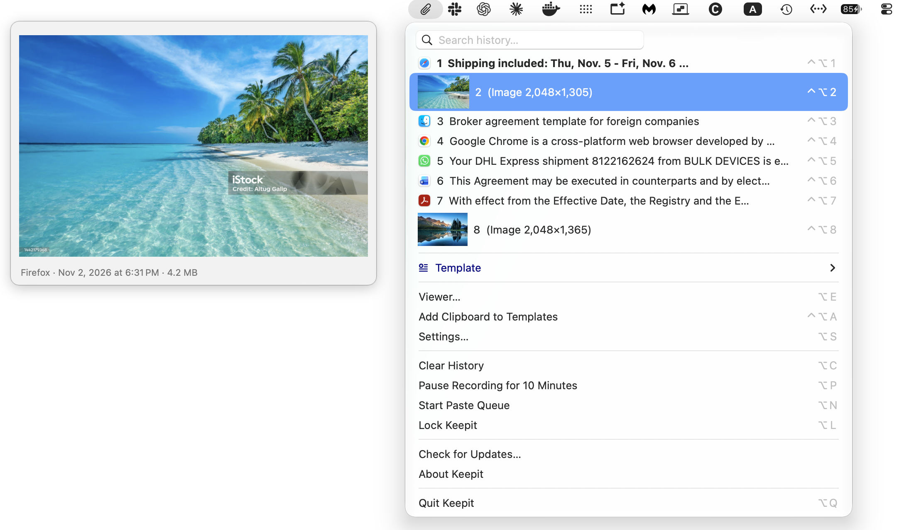
To paste an item: click it, or move to it with ↑ ↓ and press Return, or press its number with ⌃⌥ — ⌃⌥3 pastes item 3. The same key works from anywhere, without opening the menu.
Below the history: the Template submenu, the Viewer (⌥E), Settings (⌥S), Clear History (⌥C), Pause Recording for 10 Minutes (⌥P — for typing something you do not want recorded), Lock Keepit (⌥L) when a password is set, and the updater. ⌥T opens the template menu on its own; every one of these keys also works without the menu.
Search and preview
Search. Start typing while the menu is open: the field at the top filters the list by title and by full text, so a line in the middle of a long clip is found too. Return pastes the first match; Esc clears the field, and a second Esc closes the menu.
Preview. Hover over an item (or move to it with the keyboard) and a panel beside the menu shows the full image, or the first lines of a long text, with the source app, date and size. Short one-line texts have no preview — the menu line already shows them whole.
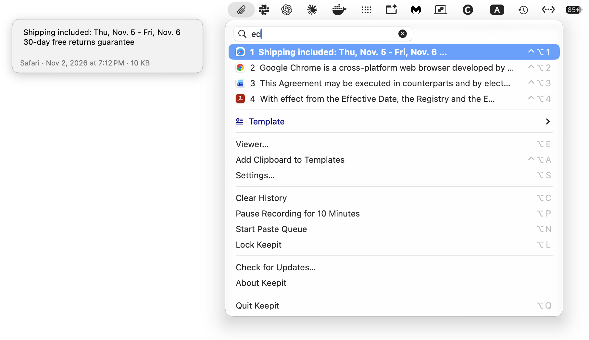
Paste without the menu
Global hot keys act on the history as it is right now — item 1 is the clipboard — from any app:
| Keys | What happens |
|---|---|
| ⌃⌥1 … ⌃⌥9, ⌃⌥0 | Paste history item 1–10 |
| ⌥⇧V | Paste the previous item (item 2); press again to swap back |
| ⌃⌥V | Paste the clipboard as plain text, formatting stripped |
| ⌃⌥U ⌃⌥L ⌃⌥T ⌃⌥S | Paste the clipboard as UPPERCASE / lowercase / Title Case / Sentence case |
| ⌃⌥W | Paste the clipboard trimmed of leading and trailing whitespace |
| ⌃⌥J | Paste the clipboard joined into one line |
| ⌃⌥A | Add the clipboard to Templates |
| ⌃⌥⌫ | Delete the newest item from the history |
Transformations apply to text; for an image or a file list the key beeps. All of these can be changed or switched off in Settings → Shortcuts.
The paste queue
Sometimes you want to copy five things from one place and paste them, in order, somewhere else — cells into a form, lines from a page into a document. The paste queue does that without the menu:
- Press ⌥N (or Start Paste Queue in the menu). The menu bar icon shows a red dot and a
counter:
📎 ● 0. - Copy as usual with ⌘C, as many times as you like. The counter goes up with every copy: 1, 2, 3… Everything is recorded in the history too.
- Switch to where the text goes and press ⌥V for each item. The first thing you copied is pasted first, the counter goes down. ⌘V still pastes the clipboard as usual, so you can mix both.
- The queue switches itself off after the last item is pasted, or after two minutes without a copy or a paste (the time is adjustable). ⌥N again stops it early.
⌥⇧N pastes everything still in the queue in one go, items joined with a line break, a tab, a
space or nothing — pick on the Paste Queue pane of Settings, where the idle time lives too. While the queue is on, the history menu marks its
items: ▶ next to paste, ○ still queued, ✓ already pasted.
The extended menu
Hold ⇧ while the history menu is open and every item gets a ▸ submenu with all actions for
that item: Paste, Paste as plain text, Copy only (clipboard, no paste), the Paste as
transformations, Add to Templates, Show in Viewer, Delete. Point at an item or press → to open it;
you can release ⇧ once it is open.
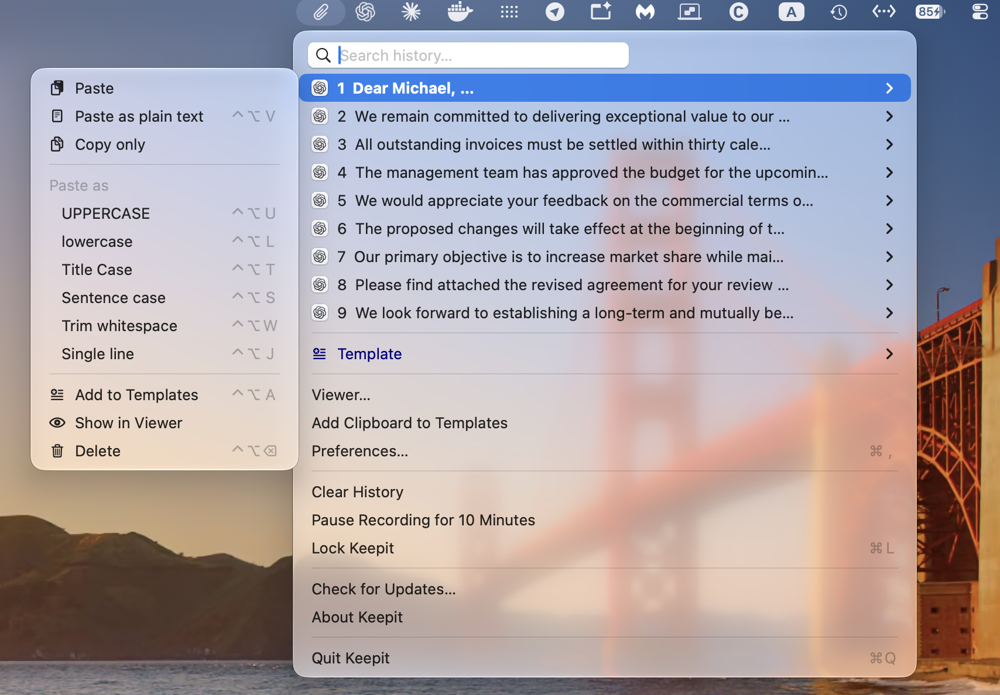
For the newest item the submenu lists the global hot keys from the table above — the same actions with the same keys, so you can learn them here. Other items show the actions without keys: a shortcut either works everywhere or is not shown.
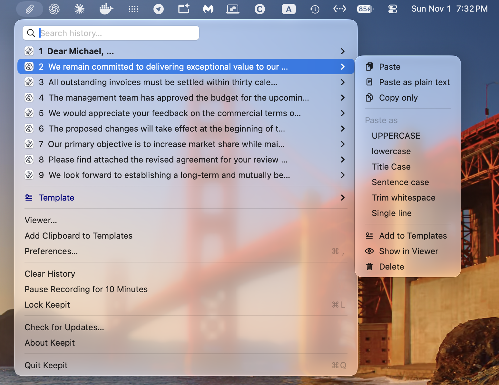
Part 3 — Templates
Templates are clips you keep for good: signatures, addresses, canned replies, code snippets, a logo you paste often. They live in a tree with folders and appear in the Template submenu of the history menu and under ⌥T.
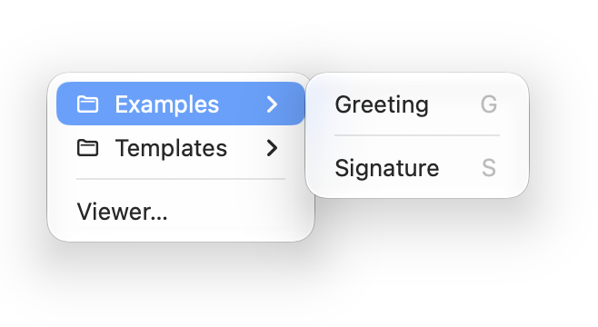
Creating and organising
Add a template
- From the history menu: ⌃⌥A for the newest item, Add Clipboard to Templates at the bottom, or ⇧ → the item's submenu → Add to Templates for any item.
- In the Viewer: select a history item and click Add to Template, or drag it onto the Template tree. New Item makes an empty text template; New Item from File (context menu) makes one from a text or image file.
Organise
- New Folder creates a folder; drag items between folders, or use Up / Down in the context menu.
- A template named
-becomes a separator line in the menu. &before a letter in the name —&Signature— makes that letter the item's shortcut in the template menu: pressSwhile the menu is open.- Set Hot Key in the context menu gives a template its own global hot key.
- A template without a name shows its first line; Rename and Clear Name are in the context menu, or edit the Name field above the text.
Placeholders
Text templates can contain {…} placeholders that are filled in at paste time. Everything else is
pasted unchanged. In the Viewer, Insert ▾ lists every placeholder and puts the chosen one at the
cursor, so there is nothing to memorise.
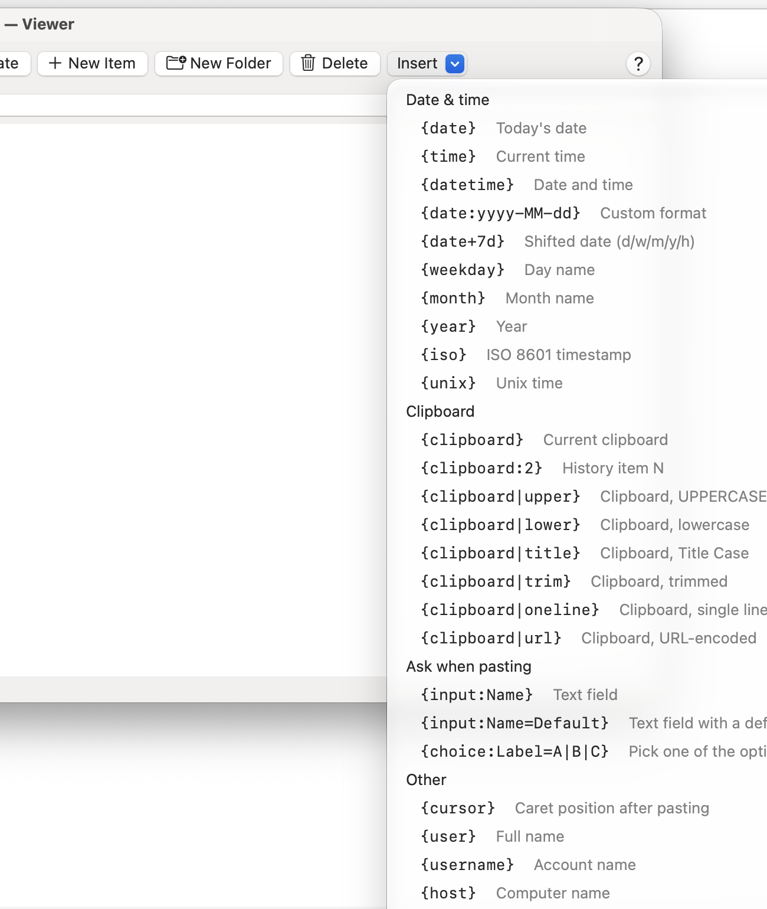
The most useful ones:
| Placeholder | Result |
|---|---|
{date} {time} {datetime} |
Today's date / current time, system format |
{date:yyyy-MM-dd} |
Any format (yyyy MM dd EEEE HH mm …) |
{date+7d} {date-1m:MMMM} |
Shifted date: d days, w weeks, m months, y years, h hours |
{clipboard} {clipboard:2} |
The clipboard, or history item N |
{clipboard\|upper} {clipboard\|trim\|oneline} |
Filters upper lower title trim oneline url, chainable |
{cursor} |
Where the text cursor ends up after pasting |
{user} {username} {host} |
Full name, account name, computer name |
{uuid} {random:1-100} |
A new UUID; a random number |
{{ }} |
Literal braces |
The full list is in the placeholder cheat sheet.
Templates that ask questions
{input:Name} and {choice:Label=A|B|C} turn a template into a small form: when you paste it,
Keepit asks for the values first, then pastes the finished text. The same name is asked only once,
however often it appears; {input:Name=Default} pre-fills the field.
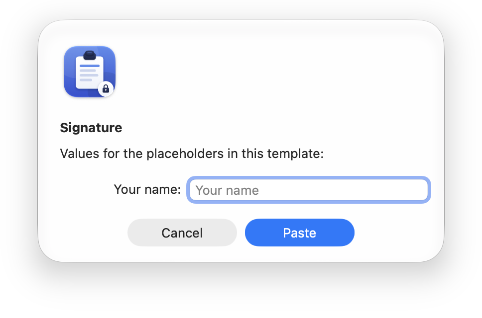
A reply template, for example:
Hi {input:Name},
thanks for your message of {date-1d}. I'll get back to you by {date+3d:EEEE}.
{cursor}
{user}
Pasting it asks for Name, fills in the dates, signs with your full name and leaves the cursor on the empty line.
Part 4 — The Viewer
Viewer… in the menu, or a right-click on the 📎 icon, opens a window with three trees: Clipboard (the clipboard right now, read-only), History (Text & files and Images) and Template.
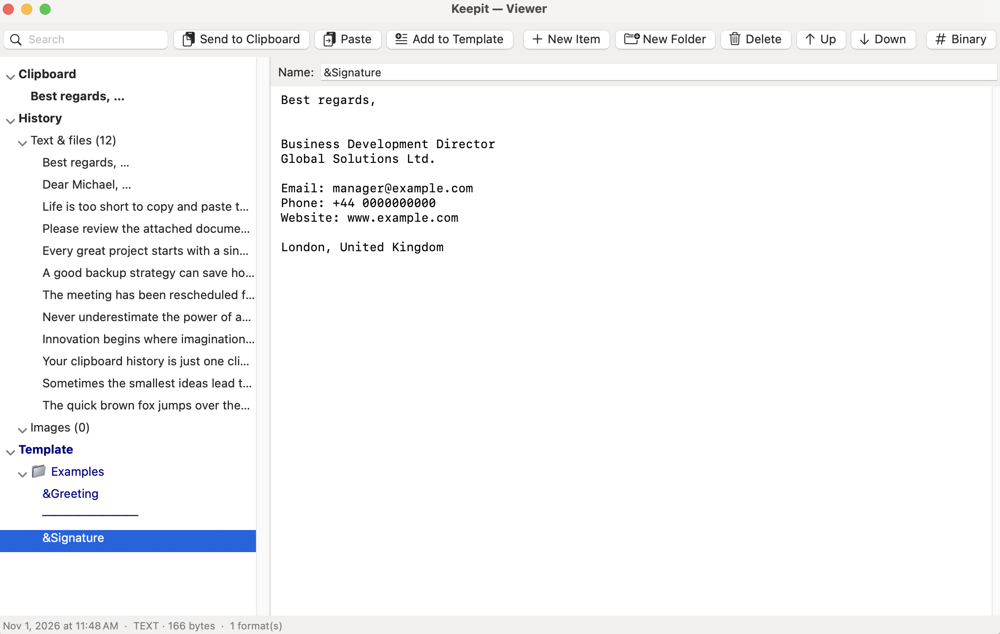
- Select an item to see it on the right. Text is editable in place — changes apply when you leave the editor; images are shown; file lists open the file on double-click. Show as Hex Dump in the context menu shows the raw bytes.
- The toolbar: Send to Clipboard, Paste (into the app you came from), Add to Template, New Item, New Folder, Delete, Insert ▾ (placeholders), and ? — this guide.
- Search (⌘F): the field at the left filters history and templates by name and content and highlights the match.
- Drag history items into the Template tree to keep them, templates into History to copy them back; reorder by dragging or with Up / Down. ⌫ deletes the selected item.
- The status bar shows the date, source app, format and size.
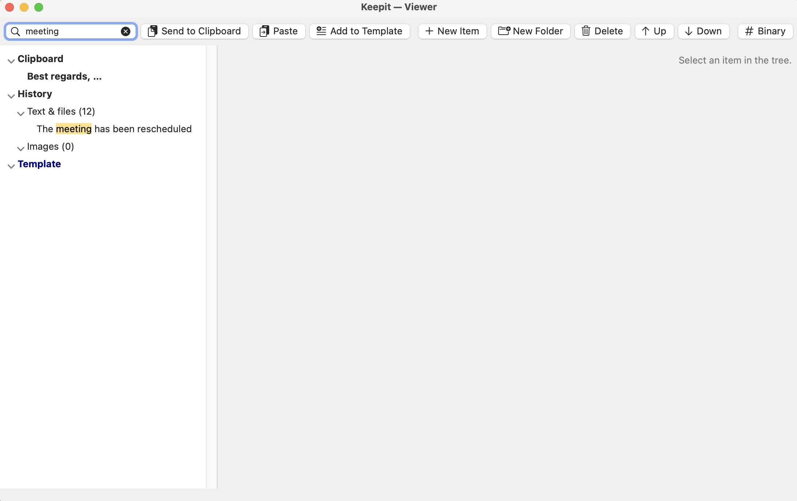
Part 5 — Settings
⌘, in the menu, Settings…, or ⌥S from any app. The window works the way settings windows do on
the Mac: pick a pane in the toolbar, and every change applies the moment you make it — there is no
Save button; close the window with ⌘W or Esc. Every option with a ? next to it has a popover
that explains it.
| Pane | What is there |
|---|---|
| General | Launch at login · save history on quit, restore on start · paste after choosing (off = only copy) · paste delay — raise it for apps that are slow to come to the front · open the menu at the text cursor |
| Shortcuts | Every global shortcut in one place — see below |
| Paste Queue | The three queue keys, the idle time after which the queue switches off, and what to put between items for Paste all remaining — The paste queue |
| History | How many text/file items and images to keep (1000 / 30) · forget items older than … · Remove duplicates (copying the same thing again moves it to the top) · Ignore concealed clipboard data · the ignored-apps list (bundle identifiers; password managers are always ignored) |
| Menu | Search field · numbering · preview panel · tooltips · source-app icons · image thumbnails · title length · thumbnail height |
| Security | Password, Touch ID, locking, recovery phrase, Export / Import Backup — Part 6 |
| Advanced | Clipboard poll interval · Data: Open Folder · Reset and uninstall: Reset… (back to a fresh install, example templates return) · Uninstall… (reset, then remove the app, Launch at login, keychain entry and permissions) |
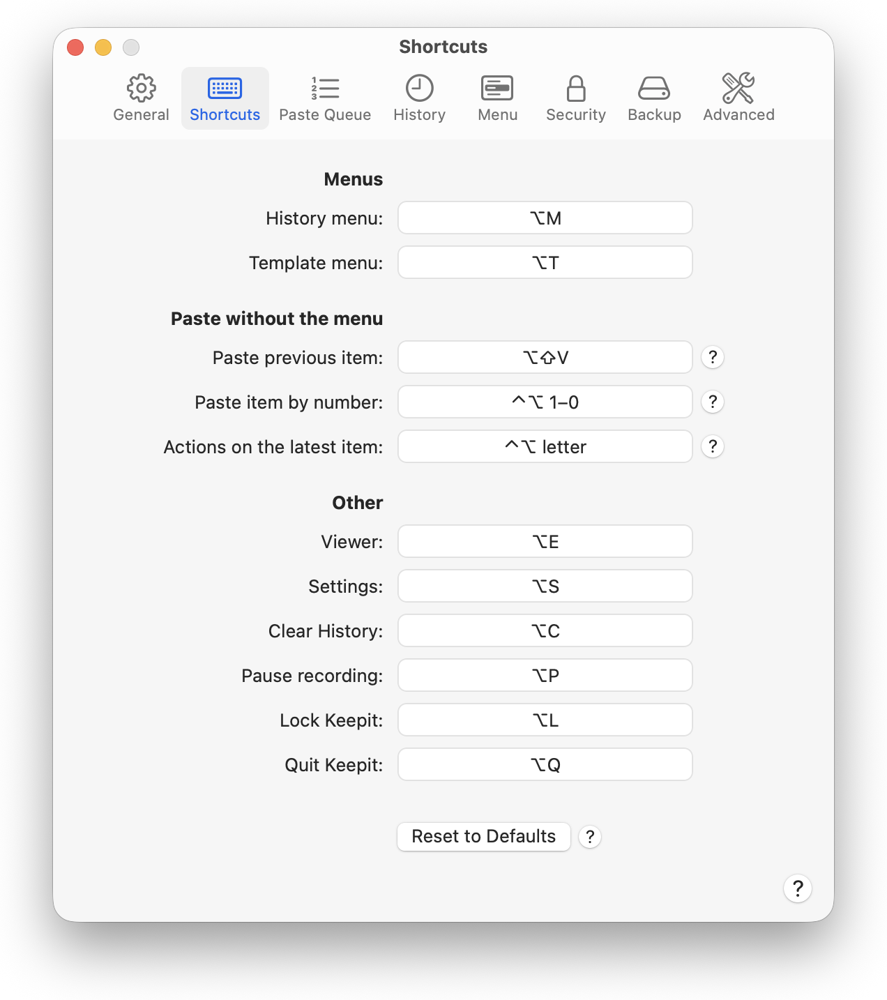
On the Shortcuts pane click a field and press a combination; ⌫ switches a key off; a combination already used by another command is refused and the reason is shown under the fields; Reset to Defaults brings back the ⌥-letter set (⌥M history, ⌥T templates, ⌥E Viewer, ⌥S Settings, ⌥C Clear History, ⌥P pause, ⌥L lock, ⌥Q quit), ⌥⇧V and ⌃⌥. Paste item by number and Actions on the latest item take only modifiers — the digit or letter is added by Keepit. Two of your own keys on the same combination are refused on Save; if macOS or another app already owns one, Keepit says so when it starts. Viewer ⌥E, Settings ⌥S, Clear History ⌥C, Pause / resume recording ⌥P, Lock Keepit ⌥L and Quit Keepit ⌥Q work from any app and are shown next to their commands in the menu. On a US layout ⌥+letter normally types a special character (⌥S = ß, ⌥C = ç …); if you need one of those, move the key.
Part 6 — Security
Password and encryption
Settings → Security → Require password at launch encrypts the history and templates with AES-256-GCM. The key is derived from your password (PBKDF2, 200 000 rounds) and lives only in memory; it is wiped when Keepit locks — Lock Keepit (⌥L), on quit, and optionally when the screen locks or the Mac sleeps.
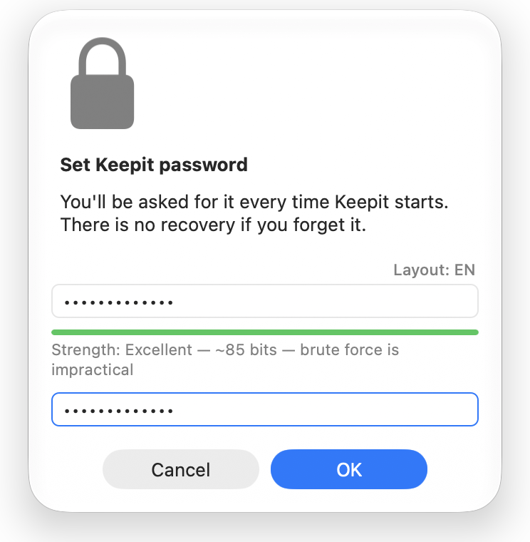
The password dialogs show the current keyboard layout and warn about Caps Lock, so a rejected password is rarely a mystery.
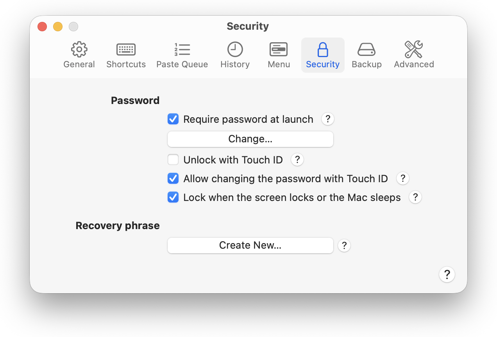
Touch ID
With Unlock with Touch ID the key is also stored in the Secure Enclave behind your fingerprint: Keepit asks for a touch instead of the password. The password keeps working as a fallback — Use Password on the prompt. With the lid closed and an external Magic Keyboard with Touch ID, Keepit asks on the keyboard. Allow changing the password with Touch ID lets a fingerprint stand in for the old password when you change it.
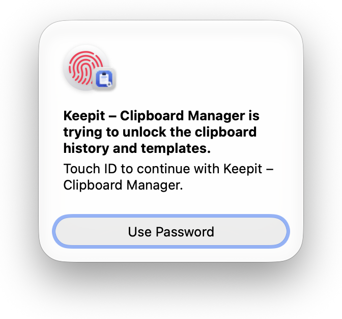
Recovery phrase
When you set a password Keepit shows a 24-word phrase once. Print it or keep it in a password manager. If you forget the password, Use Recovery Phrase… on the unlock dialog opens the data and lets you set a new one. Recovery phrase → Create New… issues a fresh phrase and invalidates the old.
Without the password, Touch ID on the same Mac, or the phrase, the data cannot be recovered: there is no server and nothing to reset.
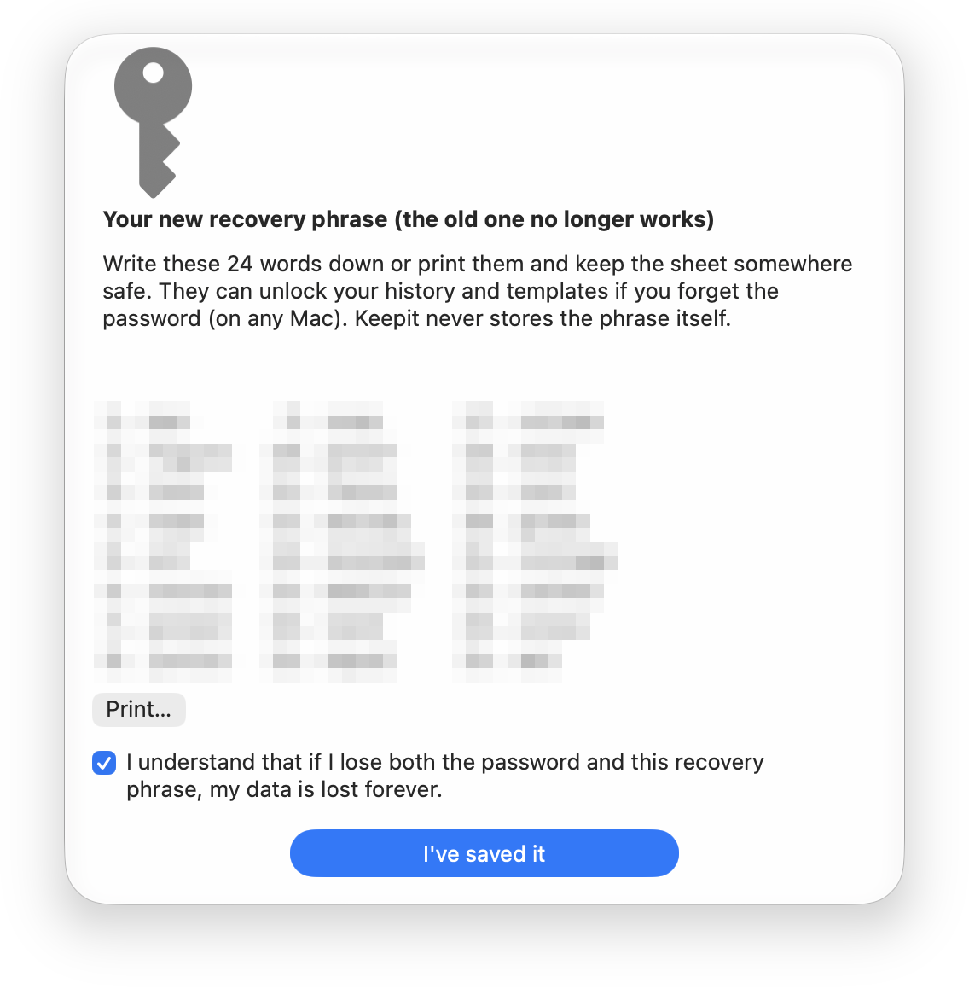
Backup
Export Backup… in the menu (or Backup → Export… in Settings → Security) writes one .keepit file with the history, templates and preferences, encrypted
with a password you choose for the file. Import Backup… reads it back on any Mac — Merge adds to
what is there, Replace starts from the backup. The same file moves data between the direct
download and the App Store edition.
Part 7 — Advanced
Automation: the keepit:// URL scheme
Shortcuts (Open URL), Raycast, Alfred, Keyboard Maestro or open in a shell can drive Keepit:
| URL | Effect |
|---|---|
keepit://paste/2, keepit://paste/latest, keepit://paste/previous |
Paste history item N into the front app |
keepit://copy/3 |
Put item N on the clipboard without pasting |
keepit://template/Signature, keepit://template/Work/Reply?copy=1 |
Paste (or copy) a template by name or folder path |
keepit://add?text=… |
Add text to the history and the clipboard |
keepit://add-template?text=…&name=… |
Create a template |
keepit://history keepit://templates keepit://viewer keepit://preferences |
Open the menus and windows |
keepit://pause keepit://resume |
Pause recording for 10 minutes / resume |
Percent-encode the text (%20 for a space). URLs are ignored while Keepit is locked.
Updates
Keepit checks GitHub Releases once a day and offers updates in a dialog; Check for Updates… does it
now. Updates are signed (EdDSA) and notarized. With Homebrew, brew upgrade --cask keepit does the
same. Checksums for every download are in SHA256SUMS on the release page.
Uninstalling
Settings → Advanced → Reset and uninstall → Uninstall… removes the app, the data folder, the keychain
entries (including the Touch ID key), the login item and the Accessibility entry. It asks for your
password or Touch ID, a typed DELETE and a confirmation — export a backup first if you might want
the data back. With Homebrew, run brew uninstall --cask --force keepit afterwards so Homebrew
forgets the cask.
Reference
Troubleshooting
Nothing is pasted after choosing an item. Accessibility is missing: System Settings → Privacy & Security → Accessibility → Keepit. If Keepit is listed but still does not paste, switch it off and on again — macOS forgets the grant when the app is reinstalled.
A hot key does nothing. Another app or macOS owns it; Keepit reports that at launch. Pick a different combination on the Shortcuts pane. ⌃⌥ with digits and letters is free on a stock Mac.
The menu opens in the wrong place. The app you are in does not expose its text cursor, so the menu falls back to the mouse pointer. Open menu at text cursor on the General tab turns the lookup off if you prefer the pointer always.
Something I copied is missing. Copies from password managers and anything marked concealed are never recorded; apps on the ignore list are skipped. See Settings → History.
Touch ID is not offered. No Touch ID sensor is reachable at the moment (lid closed, no Touch ID keyboard). Keepit keeps the setting and asks for the fingerprint as soon as a sensor is available.
Homebrew refuses to install over an existing app. Quit Keepit and move
/Applications/Keepit.app to the Trash first, or add --force.
Still stuck? GitHub Issues · dp@intistele.com
Keyboard cheat sheet
| Keys | Action |
|---|---|
| ⌥M | History menu — type to search |
| ⌥T | Template menu |
| ⌃⌥1 … ⌃⌥0 | Paste item 1–10 (in the menu and anywhere) |
| ⇧ in the menu | Extended menu: all actions per item |
| ⌥⇧V | Paste the previous item / swap |
| ⌃⌥V | Paste the clipboard as plain text |
| ⌃⌥U ⌃⌥L ⌃⌥T ⌃⌥S | UPPERCASE / lowercase / Title Case / Sentence case |
| ⌃⌥W ⌃⌥J | Trimmed / single line |
| ⌃⌥A | Add the clipboard to Templates |
| ⌃⌥⌫ | Delete the newest item |
| ⌥N · ⌥V · ⌥⇧N | Paste queue: start / stop · paste next · paste all remaining |
| ⌥E ⌥S ⌥C ⌥P ⌥L ⌥Q | Viewer · Settings · Clear History · Pause recording · Lock · Quit |
| ⌘F in the Viewer | Search |
⌘, |
Settings |
Placeholder cheat sheet
| Placeholder | Result |
|---|---|
{date} {time} {datetime} |
Date / time / both, system format |
{date:yyyy-MM-dd} {time:HH:mm} |
Custom format (Unicode date patterns) |
{date+7d} {date-1m:MMMM} |
Shifted date: d w m y h |
{weekday} {month} {year} |
Day name, month name, year |
{iso} {unix} |
ISO 8601 timestamp, Unix time |
{clipboard} {clipboard:2} |
The clipboard (item 1) or item N |
{clipboard\|upper} \|lower \|title \|trim \|oneline \|url |
Filters, chainable |
{input:Name} {input:Name=Default} |
Ask for a value before pasting |
{choice:Label=A\|B\|C} |
Ask to pick an option |
{cursor} |
Caret position after pasting |
{user} {username} {host} |
Full name, account name, computer name |
{uuid} {random:1-100} |
New UUID, random number in a range |
{{ }} |
Literal braces |